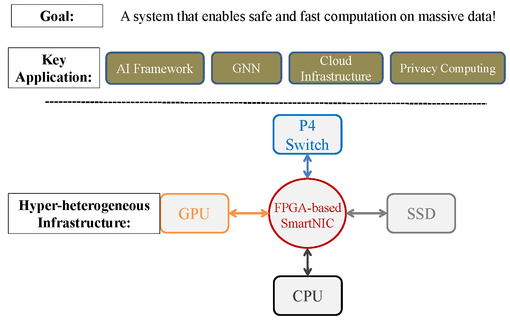

About Me
I am a ZJU100 Young Professor at Zhejiang University in Computer Science.
Before that, I was a post-doc researcher at the Systems Group, ETH, Zurich in Switzerland. .
Coordinates
Email: wangzeke [ at ] zju.edu.cn
Linkedin: Zeke's profile on LinkedIn
Google Scholar: Zeke's profile on Scholar
Zeke Wang is a ZJU100 Young Professor at Zhejiang University in Computer Science.
Research Profile
My research interest is to build a hyper-heterogenous computing platform with heterogeneous devices, e.g., FPGA, P4 switch, and GPU, for four domains of applications: big Deep Learning model training systems, Graph Neural Network system, cloud infrastructure, and privacy computing.
Publications
-
TorchGT: A Holistic System for Large-scale Graph Transformer Training.
Meng Zhang, Jie Sun, Qinghao Hu, Peng Sun, Zeke Wang, Yonggang Wen, Tianwei Zhang.
International Conference for High Performance Computing, Networking, Storage, and Analysis (SC), 2024 (PDF) -
A Deep Investigation on Stealthy DVFS Fault Injection Attacks at DNN Hardware Accelerators.
Junge Xu; Fan Zhang; Wenguang Jin; Kun Yang; Zeke Wang; Weixiong Jiang; Yajun Ha.
IEEE Transactions on Computer-Aided Design of Integrated Circuits and Systems (TCAD), 2024 (PDF) -
DmRPC: Disaggregated Memory-aware Datacenter RPC for Data-intensive Applications.
Jie Zhang, Xuzheng Chen, Yin Zhang, Zeke Wang.
IEEE International Conference on Data Engineering (ICDE), 2024 (PDF) -
Understanding Routable PCIe Performance for Composable Infrastructures.
Wentao Hou, Jie Zhang, Zeke Wang, Ming Liu.
USENIX Symposium on Networked Systems Design and Implementation (NSDI), 2024 (PDF) -
Critique of “productivity, Portability, Performance: Data-Centric Python” by SCC Team From Zhejiang University.
Zihan Yang, Yi Chen, Kaiqi Chen, Xingjian Qian, Shaojun Xu, Yun Pan, Chong Zeng, Jianhai Chen, Yin Zhang, Zeke Wang.
IEEE Trans. Parallel and Distributed System (TPDS), 2023 (PDF) -
SSiMD: Supporting Six Signed Multiplications in a DSP Block for Low-Precision CNN on FPGAs.
Qi Liu, Mo Sun, Jie Sun, Liqiang Lu, Jieru Zhao, Zeke Wang.
International Conference on Field-Programmable Technology (FPT), 2023 (PDF) -
SparseACC: A Generalized Linear Model Accelerator for Sparse Datasets.
Jie Zhang, Hongjing Huang, Jie Sun, Juan G ́omez Luna, Onur Mutlu, Zeke Wang.
IEEE Transactions on Computer-Aided Design of Integrated Circuits and Systems (TCAD), 2023 (PDF) -
A Deep Investigation on Stealthy DVFS Fault Injection Attacks at DNN Hardware Accelerators.
Fan Zhang, Junge Xu, Wenguang Jin, Kun Yang, Zeke Wang, Weixiong Jiang and Yajun Ha.
IEEE Transactions on Computer-Aided Design of Integrated Circuits and Systems (TCAD), 2023 (PDF) -
Achelous: Enabling Programmability, Elasticity, and Reliability in Hyperscale Cloud Networks.
Chengkun Wei, Xing Li, Ye Yang, Xiaochong Jiang, Tianyu Xu, Bowen Yang, Taotao Wu, Chao Xu, Yilong Lv, Haifeng Gao, Zhentao Zhang, Zikang Chen, Zeke Wang, Zihui Zhang, Shunmin Zhu, Wenzhi Chen.
ACM Special Interest Group on Data Communication (SIGCOMM), 2023 (PDF) -
Staleness-reduction Mini-batch K-means.
Xueying Zhu, Jie Sun, Zhenhao He, Jiantong Jiang, Zeke Wang.
IEEE Transactions on Neural Networks and Learning Systems (TNNLS), 2023 (PDF) -
Dynamic Graph Sampling Service for Real-time GNN Inference at Scale. (Best Poster Award)
Jie Sun, Li Su, Wenting Shen, Zichao Zhang, Zuocheng Shi, Jingbo Xu, Yong Li, Wenyuan Yu, Zeke Wang, Fei Wu, Jingren Zhou.
European Conference on Computer Systems (EuroSys), 2023 (PDF) -
P4SGD: Programmable Switch Enhanced Model-Parallel Training on Generalized Linear Models on Distributed FPGAs.
Hongjing Huang, Yingtao Li, Jie Sun, Xueying Zhu, Jie Zhang, Liang Luo, Jialin Li, Zeke Wang.
IEEE Trans. Parallel and Distributed System (TPDS), 2023 (PDF) -
Legion: Automatically Pushing the Envelope of Multi-GPU System for Billion-Scale GNN Training.
Jie Sun, Li Su, Zuocheng Shi, Wenting Shen, Zeke Wang, Lei Wang, Jie Zhang, Wenyuan Yu, Yong Li, Jingren Zhou, Fei Wu.
USENIX Annual Technical Conference (ATC), 2023 (PDF) -
SmartDS: Middle-Tier-centric SmartNIC Enabling Application-aware Message Split for Disaggregated Block Storage.
Jie Zhang, Hongjing Huang, Lingjun Zhu, Shu Ma, Dazhong Rong, Yijun Hou, Mo Sun, Chaojie Gu, Peng Cheng, Chao Shi, Zeke Wang.
International Symposium on Computer Architecture (ISCA), 2023 (PDF) -
Exploiting Multi-Level Parallelism for DNN Workloads on Adaptive Multi-Accelerator Systems.
Guan Shen, Jieru Zhao, Zeke Wang, Zhe Lin, Wenchao Ding, Chentao Wu, Quan Chen and Minyi Guo.
Design Automation Conference (DAC), 2023 (PDF) -
BM-Store: A Transparent and High-performance Local Storage Architecture for Bare-metal Clouds Enabling Large-scale Deployment.
Yiquan Chen, Jiexiong Xu, Chengkun Wei, Yijing Wang, Xin Yuan, Yangming Zhang, Xulin Yu, Yi Chen, Zeke Wang, Shuibing He, and Wenzhi Chen.
IEEE International Symposium on High-Performance Computer Architecture (HPCA), 2023 (PDF) -
Multi-objective Meta-return Reinforcement Learning for Sequential Recommendation.
Yemin Yu, Kun Kuang, Jiangchao Yang, Zeke Wang, Kunyang Jia, Weiming Lu, Hongxia Yang, Fei Wu.
CAAI International Conference on Artificial Intelligence (CICAI), 2022 (PDF) -
FpgaNIC: An FPGA-based Versatile 100Gb SmartNIC for GPUs.
Zeke Wang, Hongjing Huang, Jie Zhang, Fei Wu, and Gustavo Alonso.
USENIX Annual Technical Conference (ATC), 2022 (PDF) -
Terminator on SkyNet: A Practical DVFS Attack on DNN Hardware IP for UAV Object Detection.
Junge Xu, Bohan Xuan, Anlin Liu, Mo Sun, Fan Zhang, Zeke Wang and Kui Ren.
Design Automation Conference (DAC), 2022 (PDF) -
Graph Sampling with Fast Random Walker on HBM-enabled FPGA Accelerators.
Chunyou Su, Hao Liang, Wei Zhang, Kun Zhao, Baole Ai, Wenting Shen, and Zeke Wang.
International Conference on Field Programmable Logic and Applications (FPL), 2021 (PDF) -
Parallel and Distributed Structured SVM Training.
Jiantong Jiang, Zeyi Wen, Zeke Wang, Bingsheng He, Jian Chen.
IEEE Trans. Parallel and Distributed System (TPDS), 2021 (PDF) -
Shuhai: A Tool for Benchmarking High Bandwidth Memory on FPGAs.
Hongjing Huang, Zeke Wang, Jie Zhang, Zhenhao He, Chao Wu, Jun Xiao, Gustavo Alonso.
IEEE Transaction on Computers (TC), 2021 (PDF) -
Shuhai: Benchmarking High Bandwidth Memory on FPGAs.
Zeke Wang, Hongjing Huang, Jie Zhang, Gustavo Alonso.
IEEE Symposium on Field-Programmable Custom Computing Machines (FCCM), 2020 (PDF) -
StRoM: Smart Remote Memory.
David Sidler, Zeke Wang, Monica Chiosa, Amit Kulkarni, Gustavo Alonso.
European Conference on Computer Systems (EuroSys), 2020 (PDF) -
Understanding and Optimizing ConjunctivePredicates under Memory-efficient Storage Layouts.
Zeke Wang, Xue Liu, Kai Zhang, Haihang Zhou, Bingsheng He.
IEEE Transactions on Knowledge and Data Engineering (TKDE), 2020 (PDF) -
BiS-KM: Enabling Any-Precision K-Means on FPGAs.
Zhenhao He, Zeke Wang, Gustavo Alonso.
ACM/SIGDA International Symposium on Field-Programmable Gate Arrays (FPGA), 2020 (PDF) -
Boyi: A Systematic Framework for Automatically Deciding the Best Execution Model for OpenCL Applications on FPGAs.
Jiantong Jiang, Zeke Wang, Xue Liu, Juan Gómez-Luna, Nan Guan, Qingxu Deng, Wei Zhang, Onur Mutlu.
ACM/SIGDA International Symposium on Field-Programmable Gate Arrays (FPGA), 2020 (PDF) -
Tackling Hardware/Software Co-design from a Database Perspective.
Gustavo Alonso, Timothy Roscoe, David Cock, Mohsen Ewaida, Kaan Kara, Dario Korolija, David Sidler, Zeke Wang.
Conference on Innovative Data Systems Research (CIDR), 2020 (PDF) -
doppioDB 2.0: Hardware Techniques for Improved Integration of Machine Learning into Databases.
Kaan Kara, Zeke Wang, Ce Zhang, Gustavo Alonso.
International Conference on Very Large Data Bases (VLDB Demo), 2019 (PDF) -
Accelerating Generalized Linear Models with MLWeaving: A One-Size-Fits-All System for Any-Precision Learning.
Zeke Wang, Kaan Kara, Hantian Zhang, Gustavo Alonso, Onur Mutlu, Ce Zhang.
International Conference on Very Large Data Bases (VLDB), 2019 (PDF)(TR) -
DPI: The Data Processing Interface for Modern Networks.
Gustavo Alonso, Carsten Binnig, Ippokratis Pandis, Kenneth Salem, Jan Skrzypczak, Ryan Stutsman, Lasse Thostrup, Tianzheng Wang, Zeke Wang, and Tobias Ziegler.
Conference on Innovative Data Systems Research (CIDR), 2019 (PDF) -
Hebe: An Order-obliviousness and High-performance Execution Scheme for Conjunctive Predicates.
Zeke Wang, Kai Zhang, Haihang Zhou, Xue Liu, Bingsheng He.
IEEE International Conference on Data Engineering (ICDE), 2018 (PDF) -
G-NET: Effective GPU Sharing in NFV Systems.
Kai Zhang, Bingsheng He, Jiayu Hu, Zeke Wang, Bei Hua, Jiayi Meng, Lishan Yang.
USENIX Symposium on Networked Systems Design and Implementation (NSDI), 2018 (PDF) -
Multi-kernel Data Partitioning with Channel on OpenCL-based FPGAs.
Zeke Wang, Johns Paul, Bingsheng He, Wei Zhang.
IEEE Trans. Very Large Scale Integr. System (TVLSI), 2017 (PDF) -
Relational Query Processing on OpenCL-based FPGAs.
Zeke Wang, Johns Paul, HuiYan Cheah, Bingheng He, Wei Zhang.
International Conference on Field Programmable Logic and Applications (FPL), 2016 (PDF) -
A Performance Analysis Framework for Optimizing OpenCL Applications on FPGAs.
Zeke Wang, Bingheng He, Wei Zhang, Shunning Jiang.
IEEE Symposium on High Performance Computer Architecture (HPCA), 2016 (PDF) -
Melia: A MapReduce Framework on OpenCL-based FPGAs.
Zeke Wang, Shuhao Zhang, Bingsheng He, Wei Zhang.
IEEE Trans. Parallel and Distributed System (TPDS), 2016 (PDF) -
Design and FPGA Implementation of a Reconfigurable 1024-Channel Channelization Architecture for SDR Application.
Xue Liu, Zeke Wang, QingXu Deng.
IEEE Trans. Very Large Scale Integr.(VLSI) System (TVLSI), 2016 (PDF) -
A study of data partitioning on OpenCL-based FPGAs.
Zeke Wang, Bingheng He, Wei Zhang.
International Conference on Field Programmable Logic and Applications (FPL), 2015 (PDF) -
A Combined SDC-SDF Architecture for Normal I/O Pipelined Radix-2 FFT.
Zeke Wang, Xue Liu, Bingsheng He, Feng Yu.
IEEE Trans. Very Large Scale Integr.(VLSI) System (TVLSI), 2015 (PDF) -
Design and FPGA Implementation of High-Speed, Fixed-Latency Serial Transceivers.
Xue Liu, Q-X Deng, Zeke Wang.
IEEE Transactions on Nuclear Science (TNS), 2014 (PDF) -
Block Processor: A resource-distributed architecture.
Zeke Wang, Feng Yu, Xue Liu.
IEEE High Performance Extreme Computing Conference (HPEC), 2013 (PDF) -
Efficient Utilization of Vector Registers to Improve FFT Performance on SIMD Microprocessors.
Feng Yu, Ruifeng Ge, Zeke Wang.
IEICE TRANSACTIONS on Fundamentals of Electronics, Communications and Computer Sciences, 2013 (PDF) -
Novel algorithm for complex bit reversal: employing vector permutation and branch reduction methods.
Feng Yu, Zeke Wang, Ruifeng Ge.
J Zhejiang Univ-Sci A, 2009 (PDF) -
A pipelined architecture for normal I/O order FFT.
Xue Liu, Feng Yu, Zeke Wang.
J Zhejiang Univ-Sci C (Comput & Electron), 2011 (PDF)
Before Joining ZJU